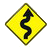

![[Athena logo]](./../images/pallas_athene_thumb.jpg)
Home
Forward
Introduction
Importing Data
Background Removal
Plotting
User Interface
Setting parameter values
Output files
Data processing
Data analysis
Other main window chores
Worked examples
Hephaestus
The best way to learn how to use ATHENA is to use ATHENA. Poke at the buttons, poke at the menus, try things just to see what happens. And above all, remember the physical and mathematical meanings of your data and of the data analysis techniques and think about how actions in ATHENA relate to those meanings.
ATHENA is a powerful and versatile program capable of supporting almost all of your common (and not-so-common) XAS data processing chores. It is not, however, a particularly intuitive program. I doubt that any XAS program could be intuitive. On top of that, ATHENA has accumulated lots of features over the years. Many of these features are necessary for high-quality data processing, others are bells and whistles intended to make data processing more convenient or more fun.
This document attempts to be a comprehensive overview of all of ATHENA's features. There are lots of words, but also lots of pictures. Feel free to jump around and to focus on the parts most directly relevant to your immediate needs. I hope you find this document and the program helpful.
Here is a summary of fonts, colors, and symbols used to denote different kinds of text. Note that some of these may appear the same in certain presentation media.
File names look C:\like\this.
The names of parameters for data processing look «like_this».
Emphasized text looks like this.
Bold text looks like this.
Links to web sites look like this.
Internal links look like this.
Keyboard shortcuts look like this: Control-q. This example means to hit the q key while holding the Control (or Ctrl) key.
Program names from the DEMETER's extended family look like this: ATHENA.
References to ATHENA's preferences are written like this: ♦Bkg → fraction. To modify this preferences, open the “bkg” section of the preferences tool and then click on “fraction”.
 Points that require special attention are written inside of
attention-grabbing boxes.
Points that require special attention are written inside of
attention-grabbing boxes.
 Notes about features missing from the document are indicated like this.
Notes about features missing from the document are indicated like this.
 Features that have been recently added to ATHENA are indicated
like this if they have not yet been properly documented.
Features that have been recently added to ATHENA are indicated
like this if they have not yet been properly documented.
 This symbol indicates a
section describing one of ATHENA's features that I consider
especially powerful and central to the effective use of the program.
This symbol indicates a
section describing one of ATHENA's features that I consider
especially powerful and central to the effective use of the program.
 This symbol indicates a section with difficult information that newcomers to ATHENA might pass over on their first reading of this document.
The html version of this document makes use of HTML 4.1 character entities (mostly Greek symbols) and will not display correctly in very old browsers.
I have to thank Matt Newville, of course. Without IFEFFIT there wouldn't be an ATHENA. One afternoon over coffee, Julie Cross and Shelly Kelly lit the spark that eventually lead to the first version of this document. Some content of this document was inspired by the XAS review article by Shelly Kelly and Dean Hesterberg (S.D. Kelly, D. Hesterberg, B. Ravel, Methods of soil analysis, (2008) p. 387-483), the first draft of which I had the pleasure of editing and the final draft of which I ended up on the author list. I have a huge debt of gratitude to all the folks on the IFEFFIT mailing list. Without the incredible support and wonderful feedback that I've received over the years, ATHENA would be a shadow of what it is today.
The following great software tools were used to create this document:
The Template Toolkit, a really fun, really powerful templating system that was used to create this entire document
The Perl programming language, PPI::HTML, and Syntax::Highlight::Perl from the CPAN repository.
The Emacs text editor along with tt-mode and the simply wonderful Emacs Code Browser
The Shutter screen capture tool.
Almost all screenshots were made of either ATHENA or the Gnuplot window on my KDE desktop. The screenshots of spreadsheets made from a report file and an LCF fit report are displayed in LibreOffice.
The images of the Tholos temple on the front page and the Klimt painting Pallas Athena in the navigation box of the html document are from http://www.artchive.com.
The image used as the ATHENA program icon is from a “Terracotta lekythos depicting Athena holding a spear and aphlaston.”. The image is licensed as Creative Commons Attribution-Share Alike 3.0 and can be found at Wikimedia Commons.
The copper foil data shown here and there are the data that Matt Newville, Yanjun Zhang, and I measured one day back in 1992 that has, inscrutably, become the copper foil data shown and referenced in a large fraction of the XAS theory literature. The copper film in the self-absorption section comes from Corwin Booth.
The platinum catalyst data shown in the difference spectrum section were donated by Simon Bare.
The gold edge data shown in many places throughout this document are taken from measurements published as M. Lengke, et al., Environ. Sci. Tech., 40:20, (2006) p. 6304-6309 (DOI: 10.1021/es061040r).
The gold oxide data shown in the smoothing section were donated by Norbert Weiher.
The iron foil data shown in the convolution section and elsewhere were measured by me while I was commissioning NSLS beamline X11B in 2004.
The sulphate data shown in the self-absorption section were donated by Zhang Ghong and come with Daniel Haskel's Fluo program. The copper data shown in the same section come with Corwin Booth's RSXAP program.
Data on a hydrated uranyl phosphate that appear in several places are the U LIII standard used by my former research group. Spectra from this standard have appeared in many publications from that group. The U3O8 sample shown in the the deglitching section are from the group's standards library.
Tin edge data which appear in several places are from C. Impellitteri, O. Evans, B. Ravel, J. Environ. Monit., 4, (2007) p. 358-365 (DOI: 10.1039/b617711e).
Data on PbTiO3, BaTiO3, and EuTiO3 are taken from my own PhD thesis.
The source files and all images files for this document can be downloaded using Git. To grab the source, you will need an Git client on your computer. This command checks a copy of the source out and downloads it onto your computer:
git clone https://github.com/bruceravel/demeter.git
This document is written using The Template Toolkit. It requires the perl interpreter and a fairly complete installation of version 2 of The Template Toolkit to build. If TT2 is not available as a package for your system (it is available as a pre-compiled package for many versions of Linux; a ppm file for ActivePerl on Windows exists; a Fink package for OSX exists) it can be downloaded from its website and installed by hand or downloaded using perl's CPAN utility. You will also need to install the Image::Size, PPI::HTML, and Syntax::Highlight::Perl modules. Compiling the LATEX version of the document will require a fairly complete LATEX installation as I make use of many styles, including amsmath, amsfonts, amssymb, floatflt, wrapfig, fancybox, fancyhdr, keystroke, varioref, hyperref, and more. (I have no experience building the PDF document on any system other than linux.)
Once TT2 and the other modules are installed, building the document should be quite simple. TT2's ttree program is used to recurse the through the directory structure containing the templates. The bin/build, and bin/tex scripts are wrappers around ttree. They invokes a number of important command line options and pass any further command line options to ttree.
TT2 was chosen for this project because it is an excellent templating tool. A templating tool was chosen because the strong separation of format and content was attractive to me. The template source is used to generate html and PDF versions of the document as well as the pod format used by ATHENA's internal document viewer.
Contributions to the document are extremely welcome. The very best sort of contribution would be to directly edit the source templates and commit your changes to the SVN repository. The second best sort would be a patch file against the templates in the repository. If TT2 is more than you want to deal with, but you have corrections to suggest, I'd cheerfully accept almost any other format for the contribution. (Although I have to discourage using an html editing tool like FrontPage to edit the html directly. Tools like that tend to insert lots of additional html tags into the text, making it more difficult for me to incorporate your changes into the source.)
After downloading and unpacking the source for DEMETER, you must configure it to build correctly on your computer. This is simple:
cd doc/aug ./configure
To build the entire document as html
./bin/build -a
Individual pages can be built by specifying them on the command line:
./bin/build bkg/norm.tt forward.tt
The LATEX document is built by
./bin/tex -a cd tex/ pdflatex athena.ltx pdflatex athena.ltx
You need to run pdflatex two or three times to get all of the section numbering and cross referencing correct. The varioref package, used to handle cross-referencing, is sometimes a little fragile. If you see the following error message: simply hit return. The message should disappear when you recompile the document.
! Package varioref Error: vref at page boundary 142-143 (may loop).
The html document files can be used by ATHENA. They are installed at the time that DEMETER is installed (and they can be installed on a Windows machine by downloading and installing the documentation package). If the html pages cannot be found, ATHENA will try to use your internet connection to fetch them from the Demeter homepage.
|
DEMETER is copyright © 2009-2014 Bruce Ravel
—
This document is copyright © 2014 Bruce Ravel
|
|
|
|
This document is licensed under
The Creative Commons Attribution-ShareAlike License.
If DEMETER and this document are useful to you, please consider supporting The Creative Commons. |
{kind=link}